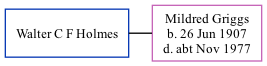

Walter Holmes, the husband of Mildred Sylvia Griggs (the second cousin twice-removed on the father's side of Nigel Horne), and married Mildred in Thanet, Kent, England around Nov 19281.
Citations
England & Wales Marriages 1837-2005 - Findmypast
Family Tree

Generated by ged2site. Last updated on Nov 13, 2024